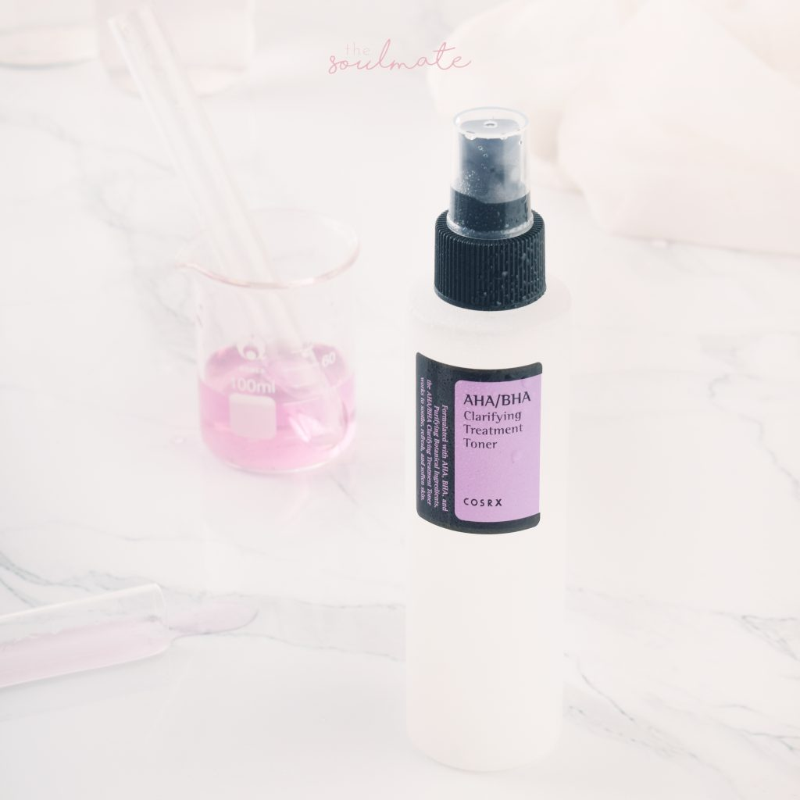
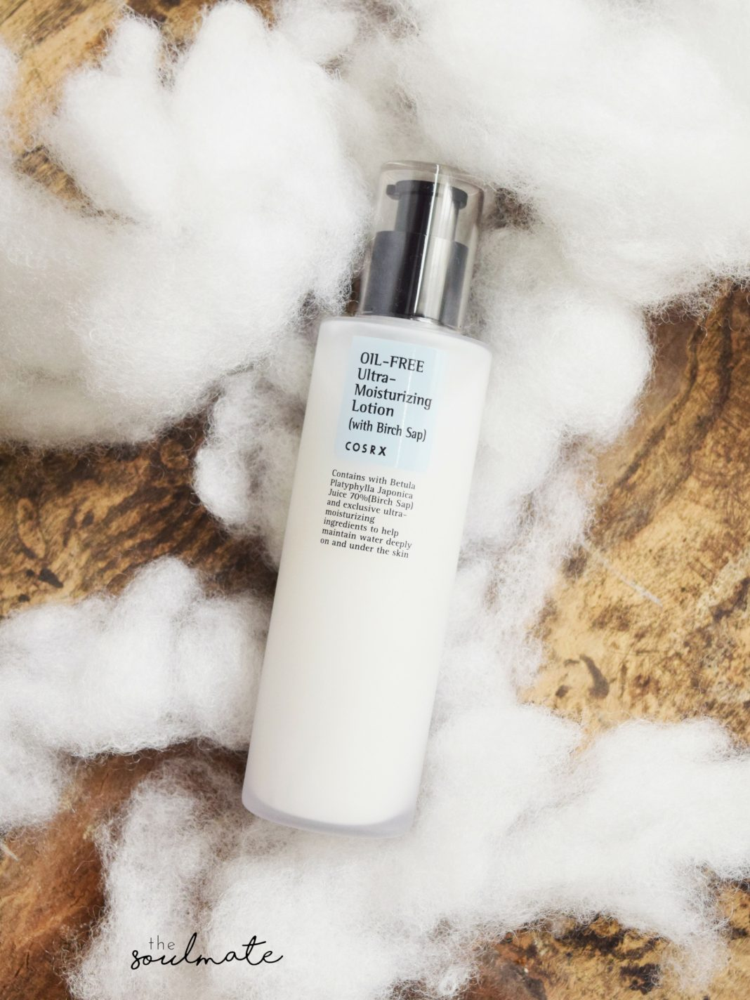
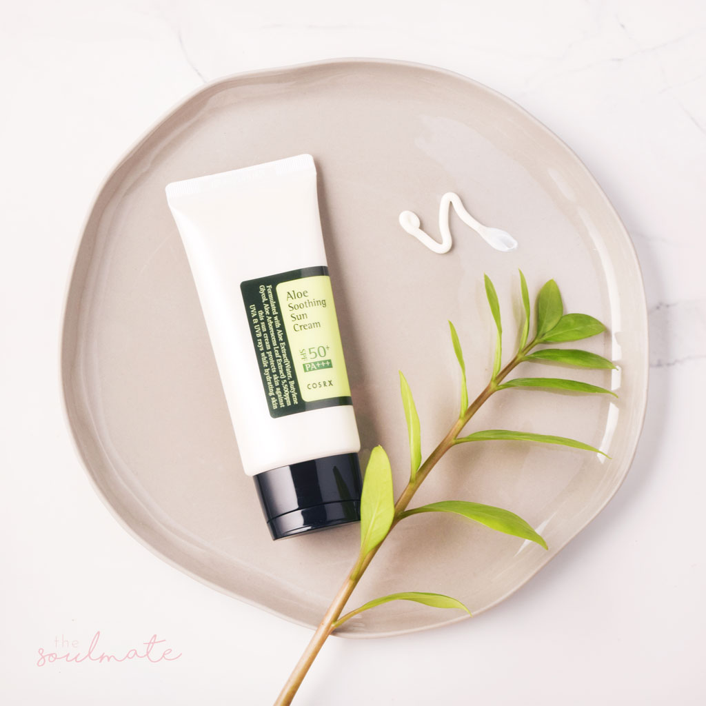

4 bước chăm sóc da cơ bản cho độ tuổi 15-20
Ở Hàn Quốc, người ta giáo dục về làm đẹp từ nhỏ. Ngay cả học sinh tiểu học cũng đã biết đến các sản phẩm chăm sóc da. Chính vì ý thức chăm sóc và bảo vệ làn da ngay từ khi còn rất nhỏ như vậy mà da người Hàn phần lớn rất đẹp, trẻ hơn so với tuổi thật nhiều. Ở Việt Nam thì không như vậy! Có rất nhiều người lớn còn không đánh giá cao tầm quan trọng của chăm sóc da, họ cho rằng chỉ cần rửa mặt với nước lã là đủ và không nên dùng mỹ phẩm vì sẽ làm hại da. Việc này dẫn đến nhiều thế hệ Việt Nam đã không có kiến thức về chăm sóc da đúng cách đặc biệt trong độ tuổi 15-20. Đây là độ tuổi nền tảng để chăm sóc da. Nếu không chăm sóc da trong độ tuổi này ít sau 20 sẽ rất dễ gặp các vấn đề da nghiêm trọng hơn và rất khó để cải thiện. Lão hoá sớm cũng là một trong số những vấn đề đó. Hôm nay hãy cùng The Soulmate tìm hiểu vềcác bước chăm sóc da cơ bản cho độ tuổi 15-20 và gợi ý một số sản phẩm thích hợp với độ tuổi này nhé!

Đặc điểm làn da ở độ tuổi 15-20
Do di truyền nên các bạn sẽ có loại da khác nhau: da thường, da dầu, da khô, da hỗn hợp và da nhạy cảm. Nếu không bị tác động gì nhiều trước đó thì làn da khá khoẻ, hàng rào bảo vệ da tự nhiên vững chắc.
Da dầu và da hỗn hợp thường sẽ bị mụn đầu đen, đầu trắng, mụn viêm, lỗ chân lông to, bề mặt thường xuyên bóng loáng. Sự thay đổi hormone bên trong cơ thể khiến tuyến dầu hoạt động mạnh hơn trong độ tuổi này.
Da thường và da khô thì bề mặt da hầu như không có vấn đề gì. Nhưng đến mùa lạnh mà không dưỡng ẩm thì sẽ cảm thấy căng rát, bị bong tróc.
Còn da nhạy cảm sẽ dễ bị kích ứng với các điều kiện thời tiết, môi trường hơn. Da này dễ bị ửng đỏ, ngứa, có thể nổi mẩn. Đối với làn da nhạy cảm thì bạn phải luôn chú ý chăm sóc đặc biệt hơn nhé!
Các bước chăm sóc da cơ bản cho độ tuổi 15-20
Ở độ tuổi này, chỉ cần duy trì chăm sóc da cơ bản với những thành phần dịu nhẹ, lành tính là đã đủ để bạn có làn da khoẻ, mịn màng, kiểm soát được các vấn đề da của mình. Chăm sóc da đúng cách sẽ giúp làm “tiền đề” vững chắc ngăn ngừa lão hoá sớm.
Có 4 bước là: Làm Sạch – Cân Bằng – Dưỡng Ẩm – Chống Nắng (ban ngày).
Làm Sạch (Tẩy trang, Sữa rửa mặt, Tẩy da chết)
Làm sạch là bước quan trọng hàng đầu với mọi loại da. Hãy nhớ làn da không có cơ chế tự làm sạch trong khi nó vẫn có khả năng tự dưỡng ẩm và tự vệ với tia UV. Hàng ngày chúng ta tiếp xúc với rất nhiều bụi bẩn, ô nhiễm nên nếu không làm sạch da thì các bước tiếp theo sẽ không phát huy tác dụng 100% được. Hơn nữa, da không sạch sẽ rất dễ bị nổi mụn, lỗ chân lông ngày càng to.
Người Hàn luôn áp dụng phương pháp double cleansing là dùng sản phẩm làm sạch gốc dầu trước rồi tiếp tục với sản phẩm làm sạch gốc nước. Tuy nhiên cá nhân mình cảm thấy double cleansing nên áp dụng với những bạn thường xuyên trang điểm và layer skincare nhiều bước dưỡng vào buổi tối. Bởi với những làn da trẻ ít khi chăm sóc hay trang điểm thì việc này không cần thiết.
Các bạn có thể bắt đầu routine của mình với một sản phẩm sữa rửa mặt nhẹ nhàng, độ pH trong khoảng chuẩn (5-6.5), giúp làm sạch bụi bẩn, dầu thừa trên da. Một số loại sữa rửa mặt cũng có khả năng tẩy trang. Nếu chỉ dùng kem chống nắng thì bạn dùng những loại sữa rửa mặt như vậy rất thích hợp lại tiết kiệm được chi phí.
Còn tẩy da chết không phải bước bắt buộc trong skincare routine. Trong khoảng 7-10 ngày các bạn có thể tẩy da chết một lần để giúp bề mặt da mịn màng, thông thoáng hơn. Các bạn trong độ tuổi này có thể chọn loại tẩy da chết dạng peeling nhẹ nhàng hoặc dạng miếng pad nhé!
Cân Bằng
Đây là bước thường được khuyên bỏ qua nếu bạn muốn tối giản hoá routine dưỡng da nhưng mình khuyên là không nên. Nước cân bằng sẽ giúp lấy nốt những tàn dư sau bước sữa rửa mặt, làm mềm da, định vị lại hàng rào bảo vệ da đồng thời cung cấp độ ẩm tức thì.

Các bạn có thể cho toner ra miếng bông rồi lau lên da mặt hoặc cho toner vào lòng bàn tay rồi vỗ trực tiếp lên da mặt. Với các bạn da dầu, da hỗn hợp muốn làm sạch da sâu hơn thì cách đầu tiên sẽ tốt hơn. Còn với các bạn da thường, da khô muốn tăng cường thêm độ ẩm thì các bạn có thể dùng cách thứ hai nhé!
Dưỡng Ẩm
Mặc dù da có khả năng sản xuất NMF (Natural Moisturizing Factor) để cấp ẩm trong môi trường thiếu ẩm nhưng nếu viêc này lặp đi lặp lại trong một thời gian dài sẽ khiến da dễ bị mất nước hơn. Sự mất nước sẽ khiến da bề mặt da sần sùi, bị lão hoá sớm. Sử dụng dưỡng ẩm 2 lần/ngày sẽ giúp da bạn luôn được mềm mịn, đủ nước, ngay cả khi bước vào mùa khô thì da bạn cũng không bị bong tróc.

Ngay cả khi bạn có làn da dầu thì dưỡng ẩm vẫn là bước bắt buộc phải có trong skincare routine. Nếu da dầu không được cung cấp đủ nước thì dầu càng tiết ra nhiều hơn.
Chống Nắng

Mình đã từng gặp rất những người trên 20 tuổi trông như đã 30 bởi vì họ không dùng kem chống nắng trong suốt những năm niên thiếu trong khi thời gian ở tiếp xúc với tia UV rất nhiều. Bí quyết của những ngôi sao Hàn có bề ngoài trẻ hơn nhiều tuổi thật như Song Hye Kyo, Song Joong Ki, Jang Na Ra… cũng đơn giản là họ bôi kem chống nắng từ khi còn ít tuổi. Tia UV là nguyên nhân gây lão hoá hàng đầu. Nguy hiểm hơn nó còn có thể gây ung thư da. Bởi vậy, ngoài việc hạn chế tiếp xúc trực tiếp với ánh nắng thì hãy hình thành thói quen bôi kem chống nắng mỗi ngày từ khi còn trẻ nhé!
Chống nắng có 3 dạng chính là vật lí, hoá học và lai. Mỗi loại này đều có những ưu điểm và nhược điểm riêng, tuy nhiên loại lai giữa vật lí và hoá học lại có nhiều điểm vượt trội hơn. Riêng với các bạn có làn da bị mụn, rất nhạy cảm thì nên dùng kem chống nắng thuần vật lí có thành phần kẽm oxit và titanium dioxide.
Khi bôi kem chống nắng, bạn hãy nhớ phải bôi đủ lượng nhé, khoảng 1/8tsp cho da mặt và gấp đôi nếu dùng cho cả cổ. Nên chọn những loại kem chống nắng có thêm thành phần như lô hội, dưa chuột để làm dịu da nhé!
Trong bài viết này, the Soulmate đã chia sẻ với các bạn về 4 bước chăm sóc da trong độ tuổi 15-20. Chỉ cần chăm sóc cơ bản trong độ tuổi này thì sau 20 tuổi bạn sẽ rất nhẹ nhõm, không phải đau đầu về các vấn đề da khó nhằn, đặc biệt là lỗ chân lông lớn. Làn da đẹp và toả sáng là thứ trang sức lấp lánh nhất của mỗi cô gái. Vậy nên hãy chăm sóc cho làn da ngay từ khi còn trẻ nhé!
Hẹn các bạn trong bài viết tiếp theo nhé!